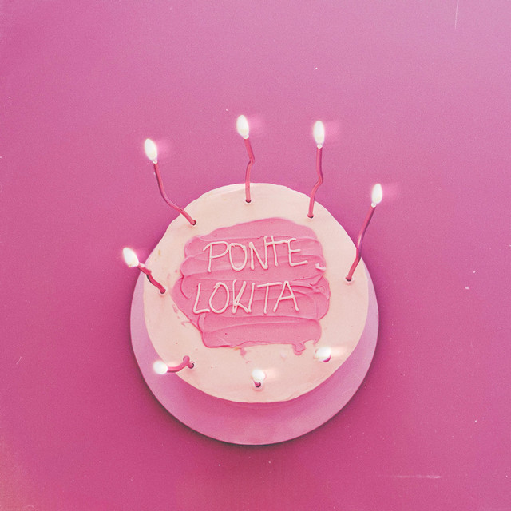
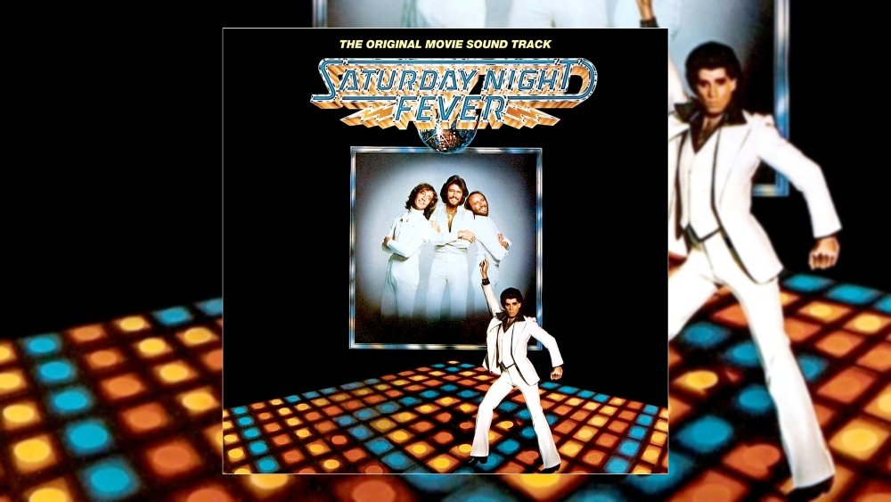

Música
Mi colección personal de música que me inspira mientras programo.

Bury The light
i am the storm
Una mezcla hipnótica de ritmos electrónicos y melodías ambientales que te transportará a un mundo digital futurista. Perfecto para sesiones intensas de codificación o para sumergirse en el flujo creativo.
0:00
4:45
Electrónica

Ponte lokita
Kid vodoo
0:00
3:45

Si no es contigo remix
Cris Mj
0:00
4:20

How Deep Is Your Love
noc
0:00
5:10
Ambient
Deep Focus
Mindscape
0:00
6:30
Matrix Rain
Digital Drift
0:00
5:45
Digital Zen
Cyber Meditation
0:00
7:15
Synthwave & Lo-Fi
Night Code
Retrowave Coder
0:00
4:50
Cyber Drive
Grid Runner
0:00
5:20
Coding Session
Dev Beats
0:00
4:05